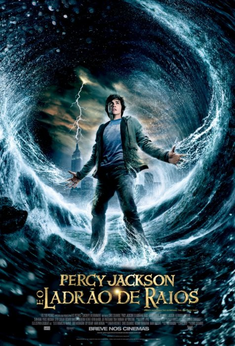

Estante de Livros
Sua Biblioteca á um clique de distância
Harry Potter e a Pedra Filosofal

Sinopse
Harry Potter nunca tinha ouvido falar em Hogwarts até o momento em que as CARTAS começam a aparecer no capacho do número 4 da rua dos Alfeneiros.
Fonte: Google Books
| Data da primeira publicação |
Autor |
Idioma Original |
Gêneros |
| 26 de junho de 1997 |
Rafa |
Inglês |
Alta fantasia, Romance, Literatura infantil |
Senhor dos Anéis: A sociedade do Anél

Sinopse
O volume inicial de O Senhor dos Anéis, lançado originalmente em julho de 1954, foi o primeiro grande épico de fantasia moderno, conquistando milhões de leitores e se tornando o padrão de referência para todas as outras obras do gênero até hoje.
A imaginação prodigiosa de J.R.R. Tolkien e seu conhecimento profundo das antigas mitologias da Europa permitiram que ele criasse um universo tão complexo e convincente quanto o mundo real.
Fonte: Google Books
| Data da primeira publicação |
Autor |
Idioma Original |
Gêneros |
| 26 de junho de 1983 |
John Ronald Reuel Tolkien |
Inglês |
Alta fantasia, Romance, Literatura infantil |
Percy Jackson e o ladrão de Raios

Sinopse
A vida do adolescente Percy Jackson, que está sempre pronto para entrar em uma confusão, torna-se bem mais complicada quando ele descobre que é filho do deus grego Poseidon.
Em um campo de treinamento para filhos das divindades, Percy aprende a tirar proveito de seus poderes divinos e se preparea para a maior aventura de sua vida.
| Data da primeira publicação |
Autor |
Idioma Original |
Gêneros |
| 2014 |
Rick Riordan |
Inglês |
Alta fantasia, Romance, Literatura infantil |
Alice no País das Maravilhas

Sinopse
A garota Alice vê um coelho branco entrar em uma toca. Vai atrás dele e chega ao País das Maravilhas.
Ela muda de tamanho muitas vezes e conhece criaturas esquisitas, como a Lagarta, a Duquesa, o Gato de Cheshire, a Lebre de Março, o Chapeleiro Maluco e o Rei e a Rainha de Copas.
| Data da primeira publicação |
Autor |
Idioma Original |
Gêneros |
| 2014 |
Lewis Carroll |
Inglês |
Alta fantasia, Romance, Literatura infantil |
Segue meu link para pesquisa: Google